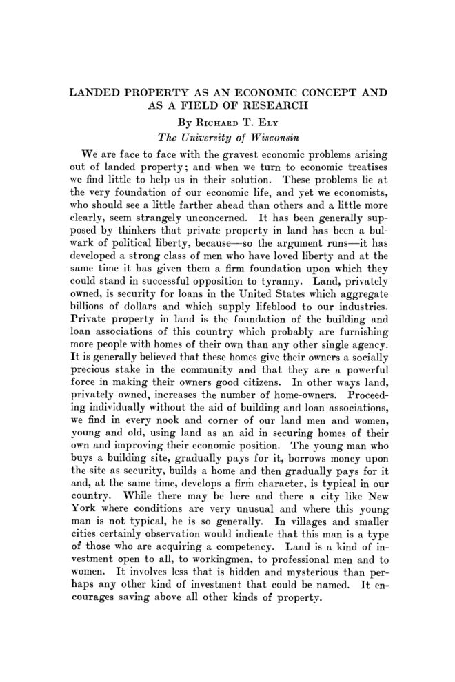

Ely, 1916: a terra não é uma coisa só
Leitura: 9 min
Ely diz que a teoria da renda trata a terra como coisa única e pede classificá-la e levantá-la por inteiro; Fetter responde que a propriedade fundiária é conceito jurídico, e o debate passa ao incremento não ganho.


Richard T. Ely abre o texto com uma queixa: os problemas econômicos mais graves vêm da propriedade fundiária, e os tratados de economia pouco ajudam a resolvê-los. Em seguida descreve uma figura que considera típica do país, fora de cidades excepcionais como Nova York: o rapaz que compra um terreno, paga-o aos poucos, toma emprestado com ele como garantia, constrói a casa, paga-a também e, no caminho, forma o caráter.
Ely, da University of Wisconsin, falou na manhã de 28 de dezembro de 1916, em Columbus. Ele lembra que a terra privada garante empréstimos de bilhões de dólares, sustenta as associações de construção e empréstimo que mais davam casa própria aos americanos e é base dos patrimônios de universidades e hospitais. Diz que não pretende defender a propriedade fundiária, mas descrever as coisas como são, e protesta: gastava-se muito para destruir o valor da terra e quase nada para investigá-la.
Por que a teoria da renda não bastava?
O diagnóstico de Ely é que os economistas tinham uma teoria pouco científica da teoria. Buscavam uma explicação simples onde ela não podia existir, uma teoria da renda que resolvesse os problemas da terra, como o charlatão que tem uma panaceia para todos os males do corpo. Os fundadores da ciência, numa vida mais simples, deram um bom começo, mas ele foi tratado como fim.
Para Ely, era preciso reconhecer que “a teoria no velho sentido pertence ao passado”. (“theory in the old sense belongs to the past”)
De Adam Smith a Ricardo, Mill e Marshall, diz, a terra foi tratada simplesmente como terra, embora Marshall reconheça que os direitos sobre ela podem ter vários donos. Mas pouco se pode afirmar sobre a terra como tal. Que deve ser privada? A experiência mundial mostra o contrário para certas terras. Que deve ser pública? Para outras, a propriedade privada deu resultados muito melhores. Mesmo a propriedade comum, que os economistas davam por superada, reaparecia na reforma agrária irlandesa e numa comissão de Wyoming, com Elwood Mead, que propunha manter as pastagens do domínio público sob direitos comuns limitados.
Para mostrar a variedade escondida no conceito, Ely recorre ao direito. Pela definição de Tiedeman, a terra inclui o solo, o que está sobre ele e o que está debaixo, em teoria até o céu e até o centro da Terra, e a superfície pode ser separada, por títulos distintos, dos estratos abaixo dela: um dono pode ter o minério de ferro, outro o chumbo, um terceiro uma camada de carvão e um quarto outra camada do mesmo mineral. Se a terra reúne tantas forças e materiais, a forma de controle adequada a um tipo não serve para outro, e o primeiro passo é classificá-la.
Como Ely classificava a terra?
Ely toma o nome emprestado de Wakefield, que defendia um preço “suficiente” para a terra, e propõe uma classificação suficiente para o início do século XX. Parte do relatório de J. W. Powell de 1878 sobre as terras áridas, que separava as regiões árida e úmida por volta de vinte polegadas de chuva e dividia as áridas em irrigáveis, de madeira e de pastagem; Ely acrescenta a terra de agricultura de sequeiro. Seguem-se outras divisões: terra morta e viva; terra para apropriação subterrânea, as minas, e de superfície, com florestas, pastos naturais, terra cultivada, terrenos para construção, estradas, margens e águas; terra urbana, com distritos atacadistas e varejistas, fabris, residenciais e de recreação, e terra rural; formas de propriedade comum, privada e pública; e classes de qualidade.
Ely formula uma regra geral: quanto mais alto o estágio da evolução econômica e mais intensivo o uso da terra, mais desenvolvida precisa ser a classificação. Toda classificação desse tipo, diz, exige um levantamento econômico minucioso, que ele considera um dos maiores empreendimentos a propor ao povo americano.
Que pesquisa ele propunha?
Ely tinha uma lista de mais de cem temas e os agrupa em nove campos: terminologia, como o uso da palavra renda; história, da evolução da política agrária na Inglaterra e na Alemanha à história das teorias; questões teóricas, como costume e concorrência na formação da renda; conservação; socialização da terra, inclusive a terra ociosa de que falavam os seguidores de Henry George; tributação; a relação da terra com o trabalhador agrícola e o arrendatário, e os degraus da escada agrícola; substitutos para a terra livre que desaparecia; e as políticas contemporâneas, como os bancos de terra e as reformas da Rússia, da Nova Zelândia e da Irlanda.
Na Irlanda, observa, uma política fundiária sucedeu a outra até a propriedade limitada do cultivador, com terra bastante para sustentar uma família no padrão de vida aceito, e o êxito exigiu levantamentos, educação, cooperação sob Sir Horace Plunkett e fomento à indústria. Ely diz não se lembrar de ter ouvido falar do imposto único enquanto estudava os problemas da terra irlandeses.
Quais eram as cinco teses?
Ely apresenta cinco teses, não como generalizações provadas, mas como hipóteses a testar. A primeira: o desejo de encontrar riqueza, em vez de criá-la, pertence a um estágio inicial de exploração, e explicaria propostas como a de Henry George, de tomar o valor da terra sem indenização, em contraste com Alfred Russel Wallace, que queria nacionalizar a terra com indenização. A segunda: não há ponto de repouso na política fundiária até se chegar à propriedade plena. A terceira: alcançada a propriedade plena, começa a socialização crescente da propriedade privada. A quarta: não há paz permanente até que a maior parte da terra seja cultivada pelo próprio dono. A quinta: é necessária uma grande parcela de propriedade pública, como florestas, minérios e margens.
O fecho é conciliador. Ely reconhece uma dívida com Henry George por ter posto o problema da terra como questão de primeira importância e por ter enfatizado o excedente econômico, mesmo vendo só parte dele, e conclui que a grande medida prática necessária é um levantamento econômico completo da terra, com governo federal, estados e pesquisadores com fundos de doação.
Como reagiram os debatedores?
Frank A. Fetter, de Princeton, concordou com o propósito geral, mas discordou do título. As classes de terra de Ely eram em parte físicas, em parte tecnológicas e jurídicas, e só em pequena parte econômicas. A grande verdade do texto, para ele, é que a terra nunca foi uma categoria econômica unificada: Ricardo não soube o que fazer com as minas sob sua lei da renda e nada disse sobre os terrenos urbanos. Fetter pergunta ainda em que momento o minério, o carvão ou a madeira, antes naturais, se tornam capital.
“A propriedade fundiária não é um conceito econômico, mas jurídico”, disse Fetter. (“Landed property is not an economic concept, but a juristic one.”)
E. Dana Durand, de Minnesota, sustentou que a terra agrícola contém um elemento de dádiva natural, cuja renda o dono não cria, e que o crescimento da população eleva a renda da terra superior, ao contrário da de máquinas e edifícios. B. H. Hibbard tratou das restrições históricas às vendas de terras e do crescimento das grandes propriedades na Europa, com a França entre as poucas exceções. Roy G. Blakey apontou uma inconsistência em Durand, e R. R. Bowker pediu o estudo das quedas de valor da terra, como em partes de Nova York e do Brooklyn. John A. Ryan disse simpatizar com a proposta de Durand de tributar os aumentos futuros de valor, aplicada de forma leve e gradual.
Ely encerrou com um caso. Um comerciante de Madison, Wisconsin, deixara de comprar dois lotes numa área em valorização para comprar ações de um banco, e os dois concluíram, fazendo as contas, que ele não errara; quem comprou os lotes teve mais trabalho e menor retorno. Qual dos dois ganhos, perguntou Ely, era o não ganho? Ele pediu investigação antes de qualquer plano para absorver a renda da terra por imposto em trinta anos e lembrou que Madison estava havia quase quarenta anos sem falência bancária, o que atribuía em parte à alta da terra, base do crédito.
Na minha leitura
Na minha leitura, a contribuição de Ely é de método: antes de discutir a política, classificar o objeto. Ao trocar a terra como fator único por um conjunto de recursos com usos, direitos e problemas distintos, ele transforma uma disputa doutrinária sobre a renda numa agenda empírica, cujo primeiro passo é um levantamento econômico.
A objeção de Fetter vai na mesma direção por outro caminho. Se a categoria terra não é econômica, a análise deve partir dos usos separáveis das coisas, e não de sua origem natural ou artificial. O debate sobre o incremento não ganho mostra o custo prático da questão: tributar a valorização exige distinguir, caso a caso, o que é renda da terra e o que é retorno do capital e do risco.
Glossário
- Renda da terra
- na teoria clássica, o pagamento pelo uso das qualidades originais e limitadas do solo.
- Imposto único (single tax)
- proposta de Henry George de tributar o valor da terra e dispensar os demais impostos.
- Incremento não ganho
- aumento do valor da terra que não resulta do trabalho ou do capital do dono.
- Direitos comuns limitados (stinted)
- direito de pastagem comum com número de animais fixado para cada usuário.
- Agricultura de sequeiro
- cultivo sem irrigação em regiões de pouca chuva.
- Propriedade plena (freehold)
- posse definitiva da terra pelo dono, sem arrendamento.
- Escada agrícola
- sequência de posições pela qual o trabalhador rural chega a arrendatário e a proprietário.
Fontes
- Landed Property as an Economic Concept and as a Field of Research — Richard T. Ely, University of Wisconsin; debatedores Frank A. Fetter, E. Dana Durand, B. H. Hibbard, Roy G. Blakey, R. R. Bowker e John A. Ryan (pp. 18–48). JSTOR · Internet Archive (PDF)
- Edição completa, com os demais artigos: Nº 146 do Arquivo.
Documento em domínio público (EUA, publicado antes de 1931), via JSTOR Early Journal Content e Internet Archive. Resumo e comentário do autor deste site, sem afiliação com a American Economic Association. Encontrou um erro? Escreva: a correção é publicada no próprio texto, com data.
← Carver, 1916: a economia do consumidor ou a da nação? ↑ Nº 146 · Columbus, 1916: o ponto de vista nacional, a terra e a guerra